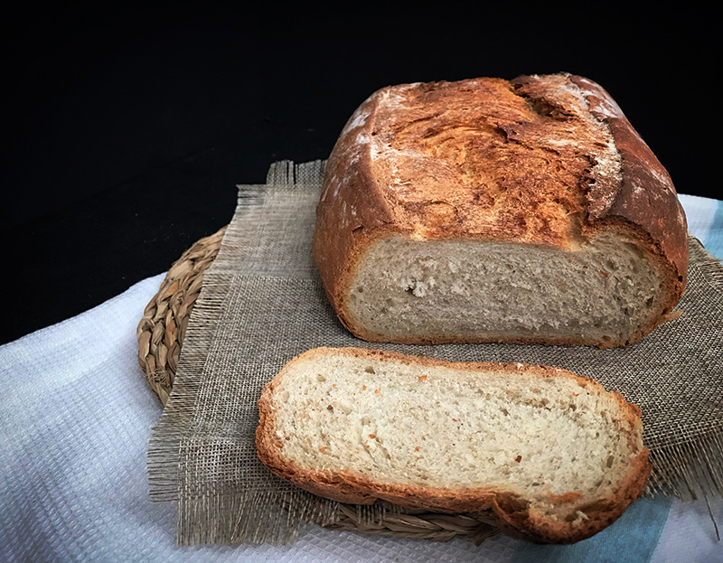

135g de masa madre líquida (si no tenéis añadir 65 ml más de agua/tónica)
1/2 cubo levadura de panadería (aprox 12g)
2 cucharadas soperas de aceite de oliva virgen extra
5g de azúcar
10g de sal
Empezamos mezclando los ingredientes secos, harina, azúcar y sal. A continuación añadimos la tónica, la masa madre,el aceite y por último la levadura.
Mezclamos los ingredientes con las manos, y cuando yano se pueda manejar, la echamos en la encimera. Tiene un amasado muy agradecido, y enseguida empezará despegarse de la mesa y a tener una textura lisa.
Si disponemos de un banetón, enharinamos el fondo, ponemos la masa y dejamos levar 1.5-2 horas tapada con paño en un lugar cálido para favorecer la fermentación.
Tras el primer levado, volcamos la pieza con mucho cuidado sobre la bandeja del horno. Me gusta poner semolina de trigo en el fondo en lugar de harina, porque ayuda a que la masa no se expanda a lo ancho sino que crezca hacia arriba. Espolvoreamos la superficie con harina y con un cuchillo bien afilado (y sino uno de sierra de cortar el pan) haz unos cortes en la superficie del pan. Volvemos a dejar levar sobre 1 hora y metemos en el horno previamente precalentado a 200º unos 30 minutos.
Pan con tónica (Pantonic)
02 de Abril del 2019

Ingredientes:
500 gramos de harina de fuerza
50 gramos de harina integral, harina de centeno, espelta… (la que más te guste, si no tienes de otra pon 50 gramos más de harina de fuerza)
300 cc de agua tibia
100 gramos de masa madre líquida ( si no tienes añade 50 cc más de agua y listo)
10 gramos de sal
1 cucharadita de miel
12 gramos de levadura fresca de panadero o 5 gramos de levadura seca de panadería.
En un bol grande pon el agua, la masa madre, la miel, la levadura y la sal. Remueve para que se integre bien.
Añade la harina tamizada y mezcla con las manos. No es necesario amasar, sólo deben integrarse los ingredientes. Haremos un primer reposo de 20 minutos. Éste reposo en panadería se conoce como autolisis. La autolisis hará que la harina se vaya hidratando y empezar a “amasarse” solo.
Pasados los 20 minutos podemos empezar a amasar hasta conseguir una masa lisa y que no se nos pegue a las manos. Veréis que es una masa agradecida de amasar. Metemos en el bol y tapamos o cubrimos con un film o gorro de ducha. Dejamos levar al menos 90 minutos.
Pasado éste tiempo sacamos del bol, enharinamos la mesa y volvemos a amasar y damos la forma deseada al pan. En el video te muestro como hago un batard, o lo que es lo mismo, una barra enorme 🤪.
Colocamos el pan sobre un papel de horno y cubrimos con un paño y dejamos que doble su volumen (al menos una hora)
Mientras el pan leva, precalentamos el horno con la cocotte o recipiente que vayamos a usar para cocerlo durante al menos 1/2 hora.
Una vez que el pan haya doblado su volumen, con un cuchillo muy afilado o uno de sierra para pan hacemos un corte en la superficie. Espolvoreamos con harina y utilizando una tabla o el propio papel de horno metemos el pan en la cocotte. Tapamos y metemos la cocotte de nuevo al horno. Cocemos 40 minutos a 200 grados y pasado este tiempo quitamos la tapa y dejamos unos 10 minutos más para que se dore.
Una vez cocido sacamos de la cocotte y dejamos enfriar sobre una rejilla.